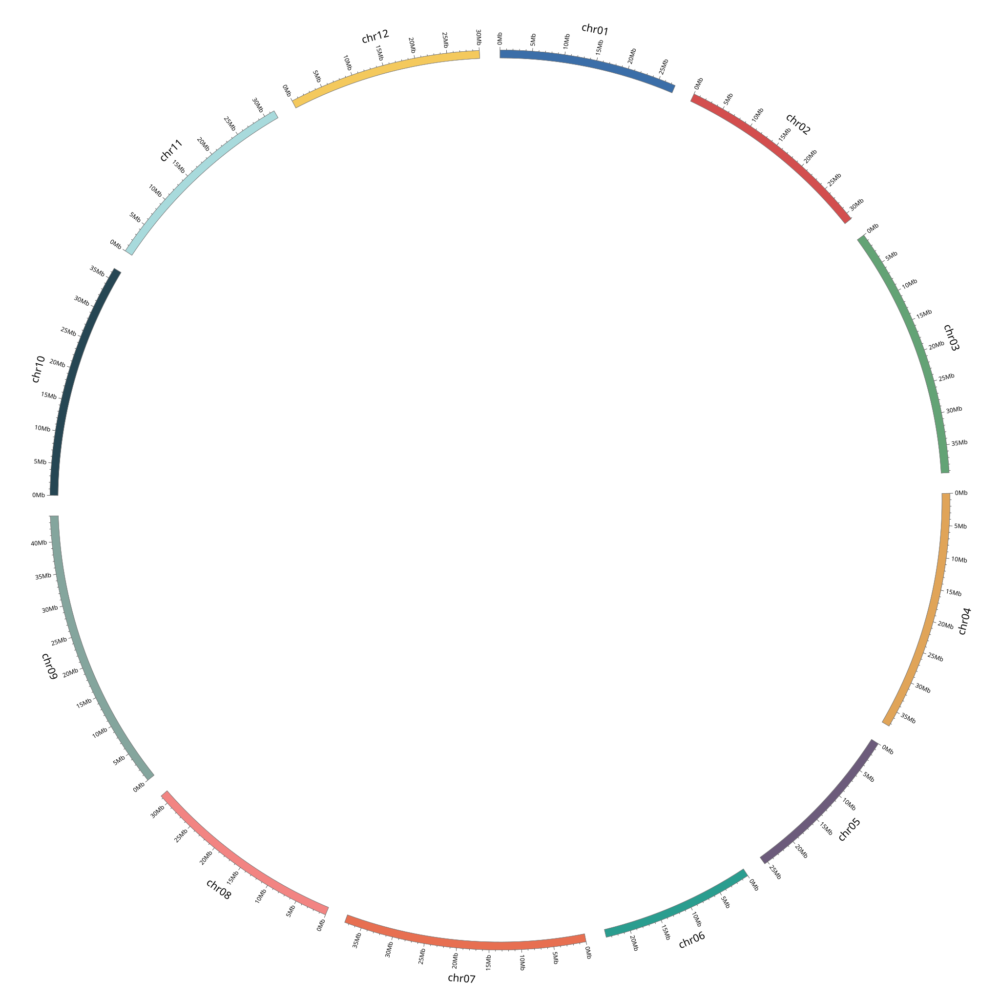
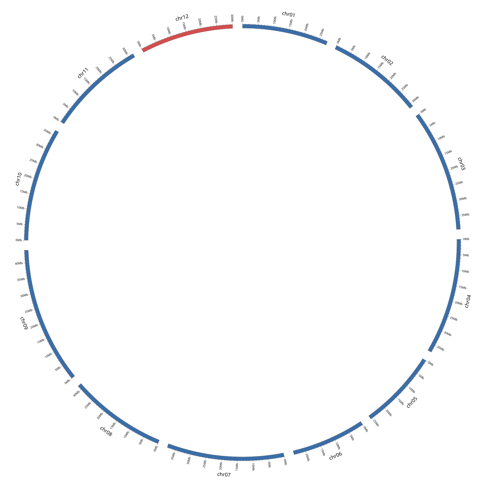
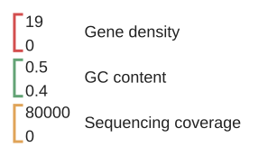

环境配置
绘图环境：
conda create -n circos_env \
-c conda-forge \
-c bioconda circos samtools bedtools ucsc-bigwigaverageoverbed数据处理环境：
conda create -n circos_python \
--override-channels \
-c conda-forge \
-c bioconda \
--strict-channel-priority \
python=3.11 \
circos \
pybigwig \
bedtools \
samtools工作目录
绘制一张圈图需要以下文件：
circos_project/
├── circos.conf # 主配置文件
├── config/ # 子配置文件夹
│ ├── colors.conf # 颜色配置
│ ├── image.conf # 输出图像配置
│ ├── ticks.conf # 刻度配置
│ ├── ideogram.conf # 核型配置
│ └── tracks.conf # 轨道配置
├── data/ # 绘图数据存放文件夹
└── output/ # 图像输出文件夹运行该脚本即可生成这些文件：
所有数据准备完毕后，运行以下命令进行绘图：
circos -conf circos.conf\核型数据
核型数据是 circos 图的骨架，其它数据都要在它的基础上进行绘制，我们只需要输入需要绘制的基因组 .fasta 文件，它就会输出绘图数据 karyotype.txt。我们可以直接绘制出主干图：


颜色是在绘图数据 karyotype.txt 的最后一个字段进行指定：
chr - chr01 chr01 0 27647870 circle_color_01 # 调用 colors.conf 中 circle_color_01 色
chr - chr02 chr02 0 31096438 circle_color_01
chr - chr03 chr03 0 39314961 circle_color_01
chr - chr04 chr04 0 37438762 circle_color_01
chr - chr05 chr05 0 25539781 circle_color_01
chr - chr06 chr06 0 23843756 circle_color_01
chr - chr07 chr07 0 37672283 circle_color_01
chr - chr08 chr08 0 31434319 circle_color_01
chr - chr09 chr09 0 44001791 circle_color_01
chr - chr10 chr10 0 36687349 circle_color_01
chr - chr11 chr11 0 31676019 circle_color_01
chr - chr12 chr12 0 30027947 circle_color_02 # 调用 colors.conf 中 circle_color_02 色而至于想怎样画图，则在核型配置文件 ideogram.conf 中进行设置。
轨道数据
所有轨道都分为 数据 和 配置 两个文件，其中数据文件移动到 .data/ 文件夹下，配置文件数据块粘贴在 tracks.conf 配置下。相关数据处理均在数据处理环境中进行，相关脚本工具使用 -- help 显示用法。所有轨道原始数据集染色体名称都要一致。
GC 含量轨道
输入基因组 .fasta 文件。
基因密度轨道
输入基因组注释 .gff/gtf/gff3 文件。
bw 轨道
这个轨道用处极大，输入由 bigwig 生成的 .bw 文件。
轨道配置
每一个轨道都是由<plot></plot>块控制，不同的轨道样式有不同的控制参数：
line 线轨道
<plot> # 轨道设置开始
type = line # 轨道类型为 line
file = data/03_g1_gc.txt # 数据文件路径
r0 = 0.80r # 该轨道圈在轨道画板起始处
r1 = 0.88r # 该轨道圈在轨道画板终止处
min = 0.20 # 数据显示范围最小值
max = 0.80 # 数据显示范围最大值
color = circle_color_03 # 颜色
thickness = 2p # line 型轨道线描边粗细
<axes> # 轨道轴线设置块开始
<axis>
spacing = 0.2r # 每隔轨道高度的 20% 绘制一条浅灰色辅助线。
color = circle_color_03 # 轨道颜色
thickness = 1p # 轨道描边粗细
</axis>
</axes> # 轨道轴线设置块结束
</plot> # 轨道设置结束histogram 柱轨道
<plot> # 轨道设置开始
type = histogram # 轨道类型为 histogram
file = data/gene_density.txt # 数据文件路径
r0 = 0.90r # 该轨道圈在轨道画板起始处
r1 = 0.98r # 该轨道圈在轨道画板终止处
min = 0.20 # 数据显示范围最小值
max = 0.80 # 数据显示范围最大值
color = circle_color_03 # 柱子描边颜色，当描边设为 0 时，此项无效
fill_color = circle_color_02 # 柱子填充颜色
thickness = 2p # 柱子描边
extend_bin = no # 关闭柱子描边
<axes> # 轨道轴线设置块开始
<axis>
spacing = 0.2r # 每隔轨道高度的 20% 绘制一条浅灰色辅助线。
color = circle_color_03 # 轨道颜色
thickness = 1p # 轨道描边粗细
</axis> # 轨道轴线设置块结束
</axes>
</plot> # 轨道设置结束轨道底色参数
# 给每一个数据轨道添加底色
<backgrounds>
<background>
color = vvlgrey # 自定颜色或 Circos 色，这里再强调一遍以防你跳着看
</background>
</backgrounds>
# 还可以根据数值范围设置不同底色：
<backgrounds>
<background>
color = vvlgrey
y0 = 0r # 在轨道 0 到 0.5 处设置 vvlgrey 色
y1 = 0.5r
</background>
<background>
color = vlgrey
y0 = 0.5r
y1 = 1r # 在轨道 0。5 到 1.0 处设置 vlgrey 色
</background>
</backgrounds>图例
在主配置文件夹下运行该脚本，脚本会自动读取轨道配置和颜色配置来绘制图例。

